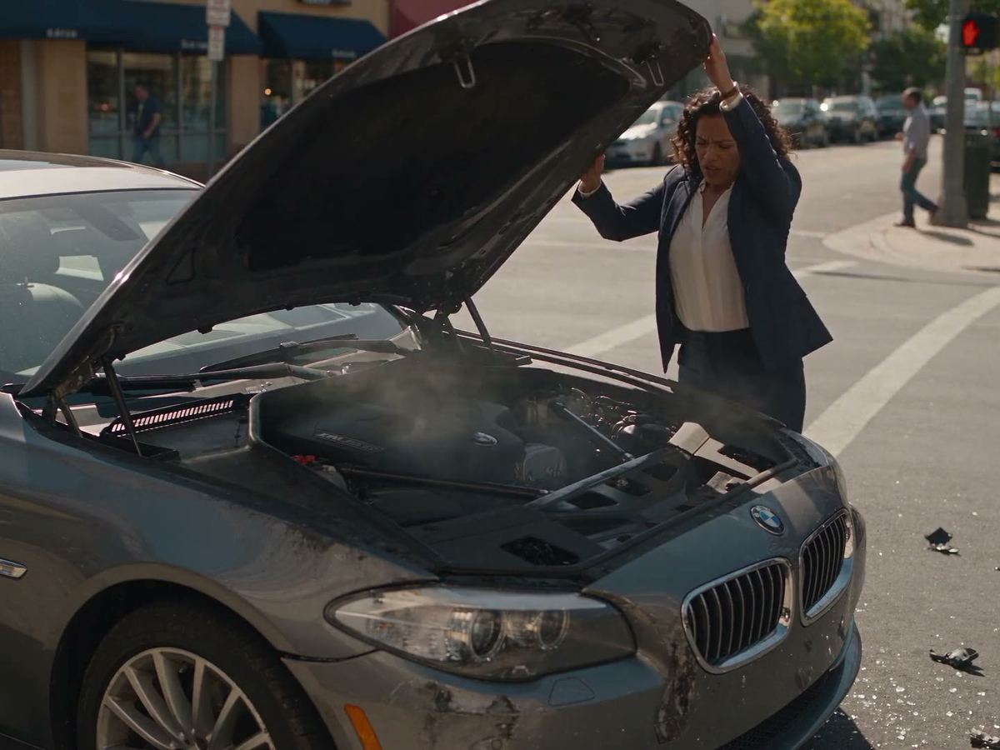
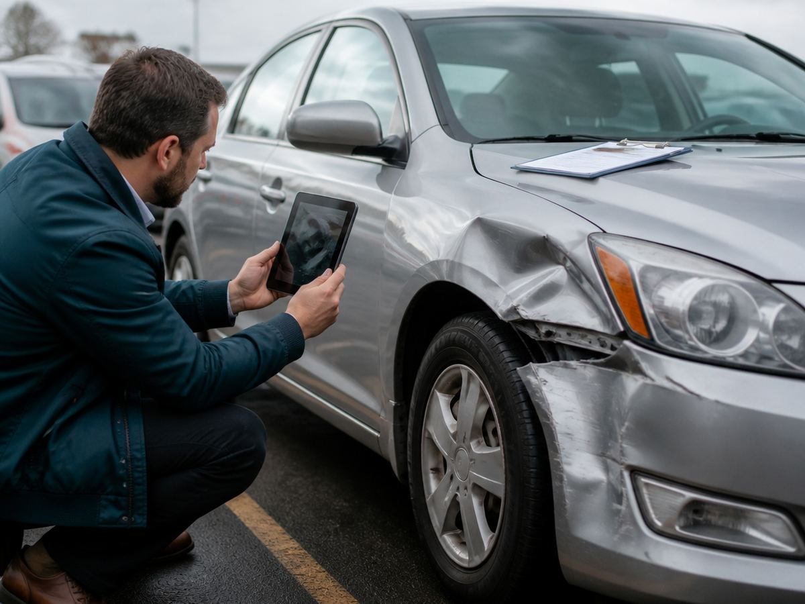
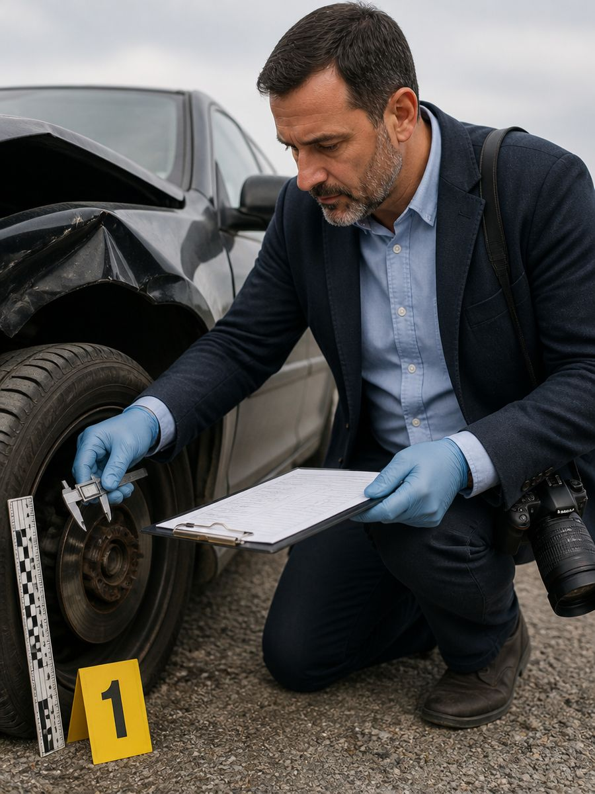
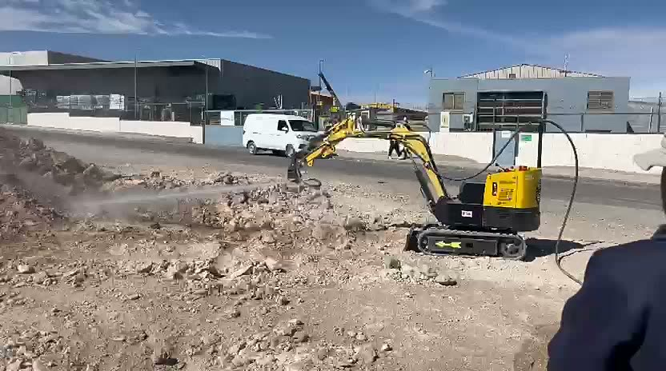

Sacar al operador de la línea de fuego: innovación minera hecha a medida
Ingeniería inversa, operación remota y mejores métodos para limpiar bajo correas transportadoras y en espacios confinados.
Leer artículo →Peritajes mecánicos con metodología forense: informes periciales objetivos, defendibles ante tribunales y aseguradoras, en todo Chile.
Desde la falla mecánica cotidiana hasta la reconstrucción de un accidente: cada informe se construye con rigor técnico y respaldo documental.
Informe pericial con método científico, defendido ante tribunales civiles y penales.
Ver más
Reconstruimos el choque: velocidad, frenado, estado mecánico y causa basal.
Ver más
Contrainforme técnico para impugnar una liquidación rechazada por la aseguradora.
Ver másCausa raíz de fallas, valorización de daños y garantías en equipos pesados.
Especialidad en minería Ver másCualquier taller puede decirte qué se rompió. Un peritaje forense establece cómo, cuándo y por qué, con un estándar que resiste el examen de un tribunal.
Procedimientos estandarizados, mediciones verificables y conclusiones reproducibles: nada queda a la interpretación.
Registro riguroso de cada evidencia levantada en terreno, para que su valor probatorio no se pierda en el camino.
El informe responde a la evidencia, no a quien lo encarga. Esa independencia es justamente lo que le da peso ante el juez.
Informes redactados conforme a los requisitos procesales chilenos, con defensa oral de las conclusiones si el juicio lo requiere.

La evidencia técnica bien levantada puede definir el resultado de un juicio.
Prueba pericial y sana críticaTres pasos y sin sorpresas: antes de comprometerte sabes qué se va a analizar y qué vas a recibir.
Nos cuentas tu caso. Evaluamos la viabilidad técnica y te entregamos una propuesta para que decidas.
Estudio de la evidencia, contraste con especificaciones del fabricante y determinación de la causa raíz de la falla o siniestro.
Entrega del informe pericial con conclusiones fundadas y, si el caso lo requiere, declaración ante el tribunal.
Ingeniero civil mecánico, doctor por la Universitat de Lleida y perito judicial. Desde 1975 trabaja con autos, camiones y maquinaria: sabe cómo falla una máquina porque ha pasado la vida reparándolas, mejorándolas y enseñando cómo funcionan.
El mismo conocimiento técnico que respalda cada peritaje se aplica al desarrollo de soluciones para la minería: equipos y accesorios para trabajar en espacios confinados, con el operador a distancia segura.
Prueba de alcance y barrido: miniexcavadora con boquilla de agua a presión, controlada a distancia, despejando material sin exponer al operador.
Brazo articulado de largo alcance para despejar derrames bajo correas transportadoras desde una distancia segura.
Limpieza de derrames junto a correas transportadoras, donde no entra un equipo convencional.
Control remoto por joystick: el operador trabaja fuera de la zona de riesgo.
Lo que necesitas saber antes de pelear con una aseguradora, comprar un usado o llegar a un juicio.

Ingeniería inversa, operación remota y mejores métodos para limpiar bajo correas transportadoras y en espacios confinados.
Leer artículo →La diferencia entre un diagnóstico de taller y una pericia con valor de prueba, explicada sin tecnicismos.
Leer artículo →Velocidad, frenado, estado mecánico y dinámica del impacto: la evidencia que decide quién tiene la razón.
Leer artículo →Causa raíz, valorización de daños, garantías y seguros: la evidencia técnica detrás de cada falla de equipo.
Leer artículo →Cómo un contrainforme técnico puede dar vuelta una liquidación mal fundada, paso a paso.
Leer artículo →Vicios ocultos en la compraventa: qué dice la ley, qué prueba necesitas y cómo se acredita técnicamente.
Leer artículo →Cómo valoran los tribunales chilenos el informe de peritos y cuándo sumar al perito a la estrategia de una causa.
Leer artículo →Cuéntanos qué pasó. Revisamos tu caso y te enviamos una cotización sin costo ni compromiso.